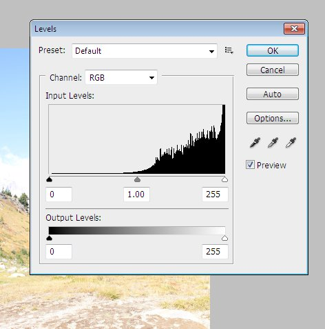
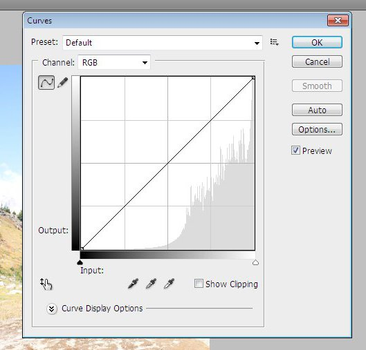

This section will give a quick overview of how to do the things we have learned about in the GIMP, inside Adobe's Photoshop Program.
There are many tools available in the
tool box, however there are others that are available there from
pop-out boxes that come out of the tool box. To see these, right
click on any tool with a small triangle in the lower right corner.
Rotation is a bit trickier in Photoshop
than it is in the GIMP. There isn't a tool to do it, just a box
that you can type a rotation angle in. You can get to it from
Image -> Image Rotation -> Arbitrary...
Cropping is just about the same as in the GIMP. You can set the aspect ratio and rule-of-thirds guide in the bar at the top of the screen. To move the selected crop area, you need to click and drag on one of the borders.


Resizing is almost exactly identical to
the GIMP. Image -> Image Size...

Unlike in the GIMP where we use the selection tool, then apply a filter to remove redeye, Photoshop has that all built into one too. Simply select the tool, then use it to select the red eyes, one at a time.

As far as normal selection, there is a rectangle select tool (called the Rectangle Marquee Tool) which is basically the same as the GIMP's. For the more advanced selection, there is the Lasso Tool/Polygonal Lasso Tool, similar to the free select tool in GIMP, and the Magnetic Lasso tool, similar to the scissors select tool in GIMP.
They can be found under the lasso tool
pop out.

The Polygonal Lasso Tool works the same
way as the free select tool, until you want to move an old node.
In Photoshop you can hit the delete (del) key to remove the previous node,
but unlike the GIMP there is no way to go back and fix points further
back, without deleting all the nodes in between.

The Magnetic Lasso Tool works in a
similar manner to the GIMPs, but can be a little smoother to use.
It
actually goes through and calculates the path for you as you move the
mouse, instead of waiting until you place a node. It will also
automatically place nodes for you as you move the mouse, saving you
from having to make a click exactly on the boundary between the two
areas. However, as with the polygonal select tool, you can't
change
random nodes that you have placed, you can only hit the delete key to
remove the last one.

The way layers work is almost identical
between the two programs. The only difference I saw was that when
you
pasted something into Photoshop, it automatically became its own
permenant layer, instead of just a floating layer (that you had to make
a new layer out of) as in the GIMP.

The Brightness-Contrast, Levels, and Curves dialogs all work the same as they do in the GIMP. You can find them in the Image -> Adjustments menu.


